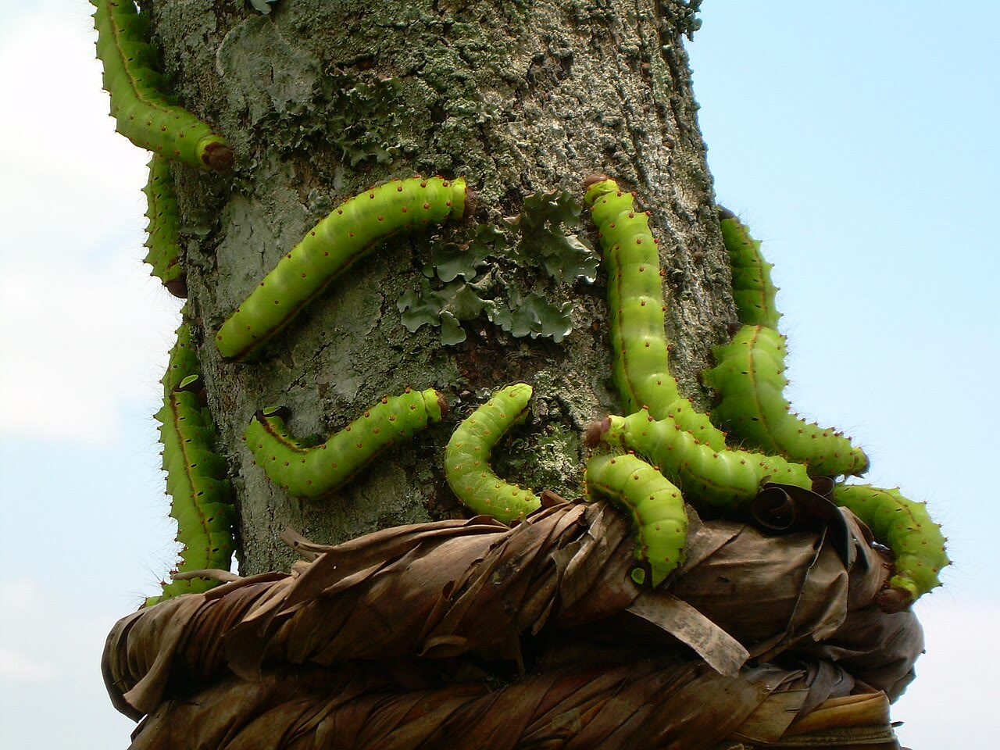
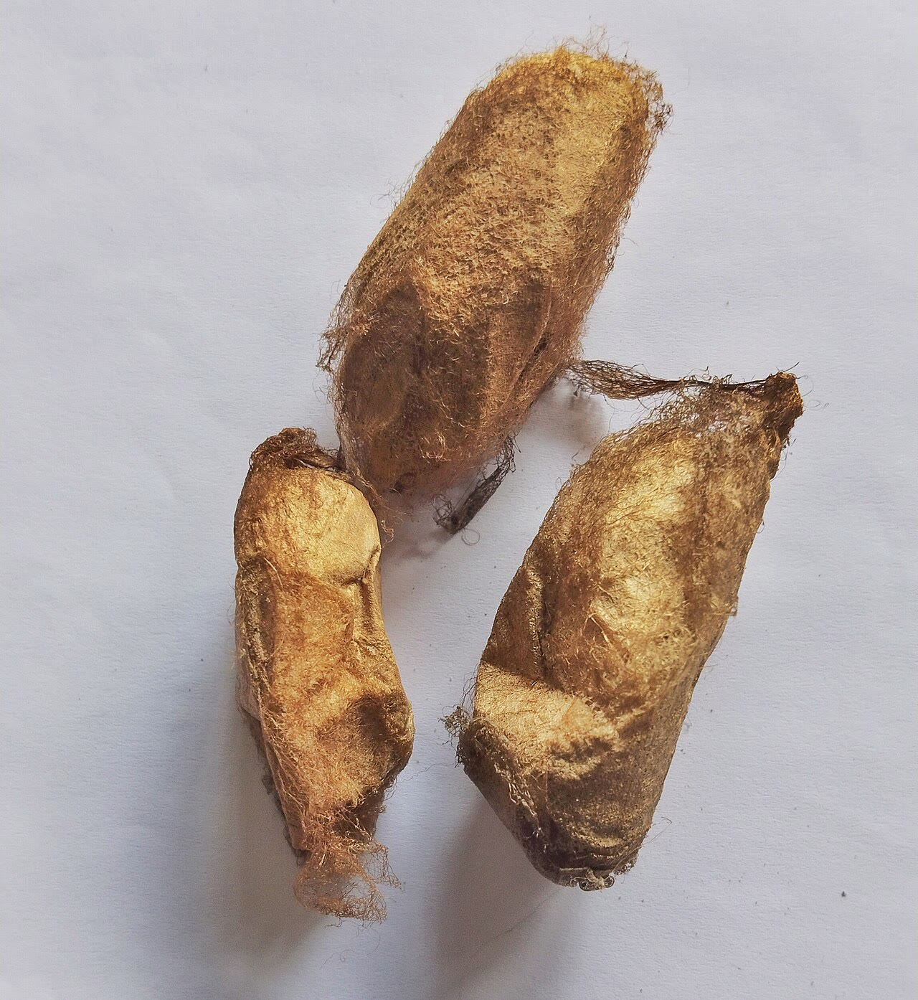
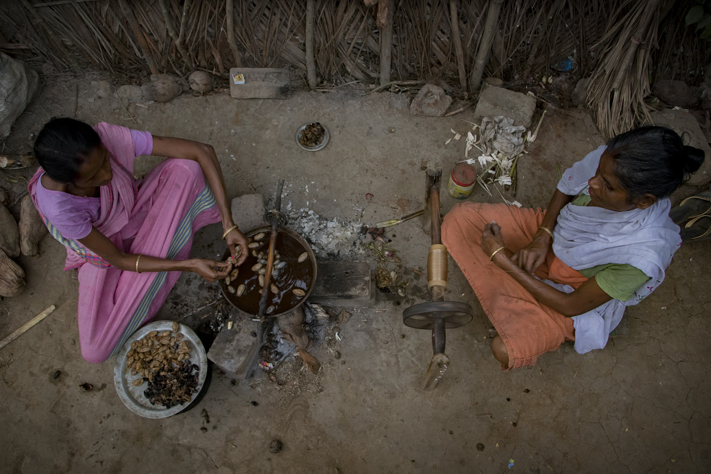
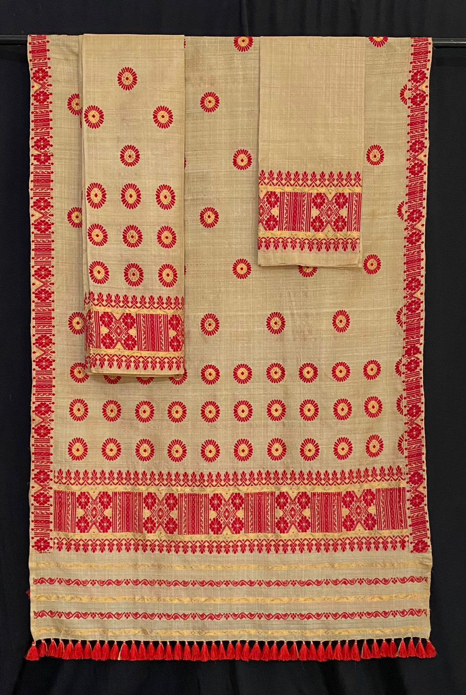

সোণ নহয়।
এটা পোকৰ কাম।
Not gold. A worm made this.
আহোম যুগৰ
সোণালী কাপোৰৰ ৰেচিপি
ৰেচিপি · ০০৭
পোক
মুগা
খাদ্য
চম আৰু চোৱালু পাত
ৰং
প্ৰাকৃতিক সোণালী
জি আই টেগ
২০০৭
Muga silk: naturally golden, from Assam's own silkworm.
চম গছৰ
পাত
পোকে খায়,
ডাঙৰ হয়
নিজকে মেৰাই
কোষ বান্ধে
কোষৰ পৰা
সূতা
তাঁতত
বোৱা
সোণালী মুগা!
সঁচা মুগা
Real photos · Assam




চম গছত মুগা পোক
কোষ
সূতা কটা
মেখেলা-চাদৰ
Photo: Satyakamd, Wikimedia Commons, public domain
আহোম ৰজাই ৰাখিছিল
০
জন তাঁতী
কোৱা হয়, ধুলে
আৰু উজলে!
It's said muga's lustre grows with every wash.
সোণ নহয়।
আহোমৰ ৰেচিপি · ০০৭